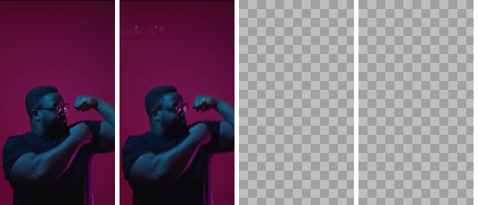
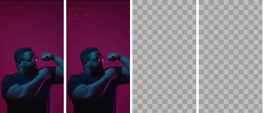
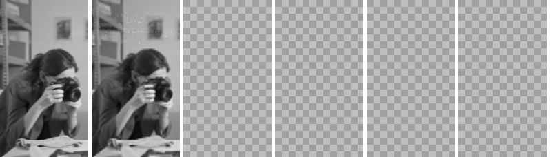
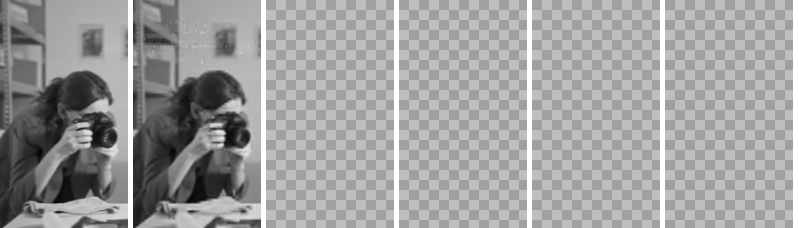

Decomposition Results
We applied our method to Crello Animation. The leftmost is the input, the next is the decomposed background, and the rest are the decomposed sprites for each sample. (Click for more samples).
 

 
